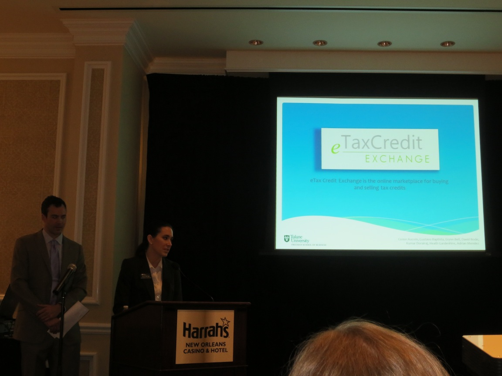
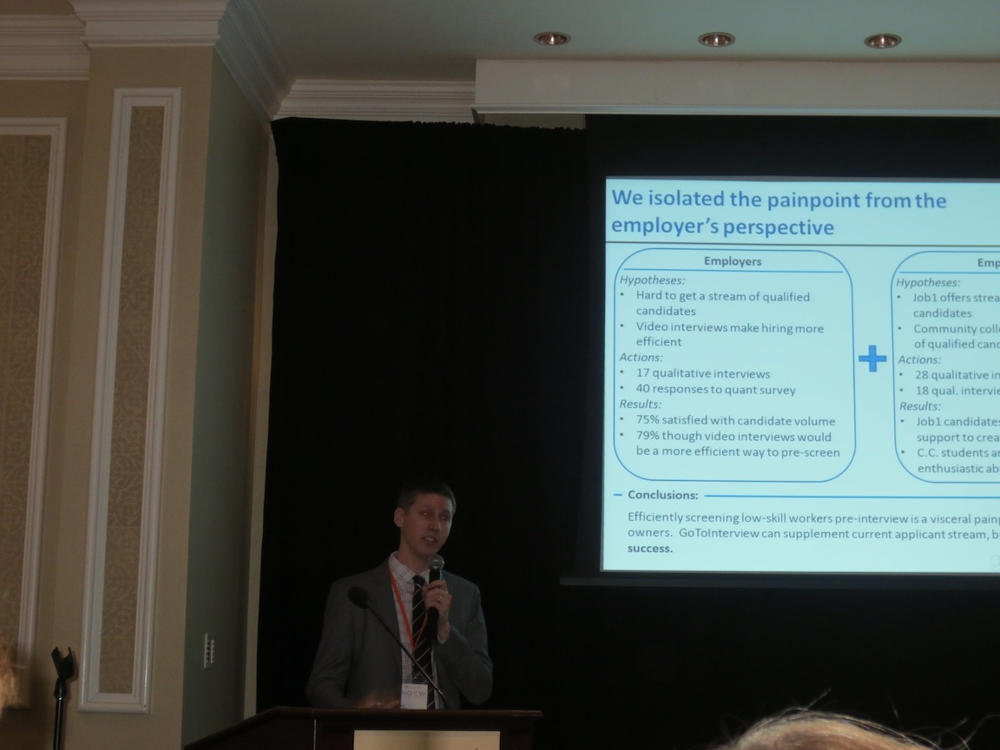
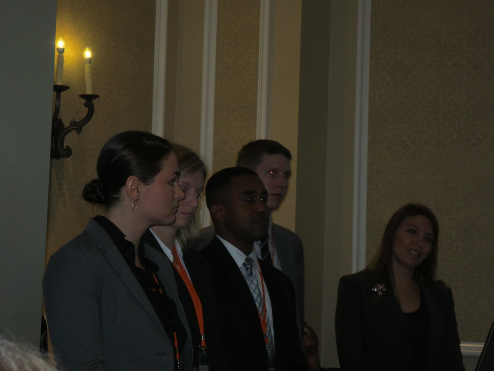
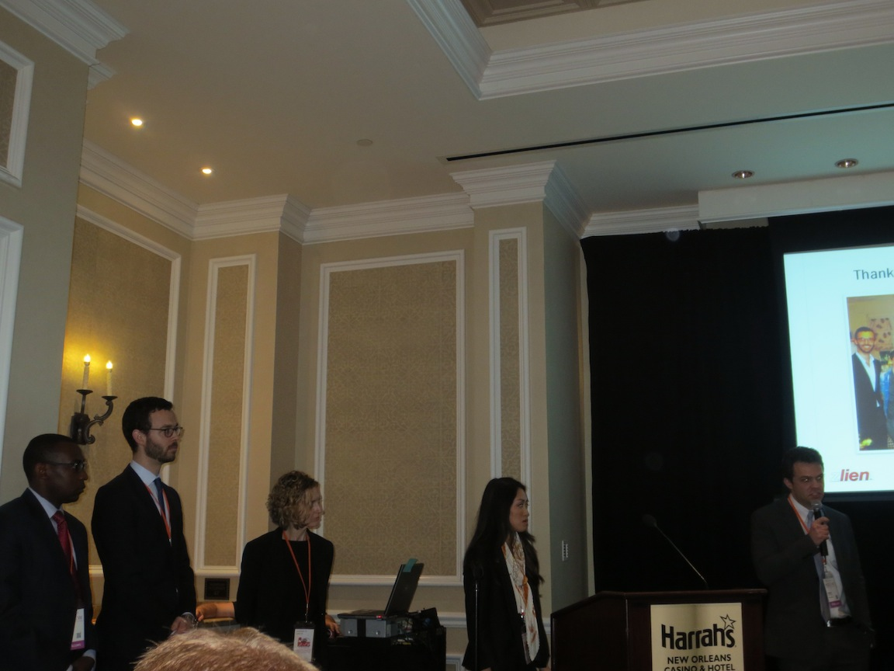
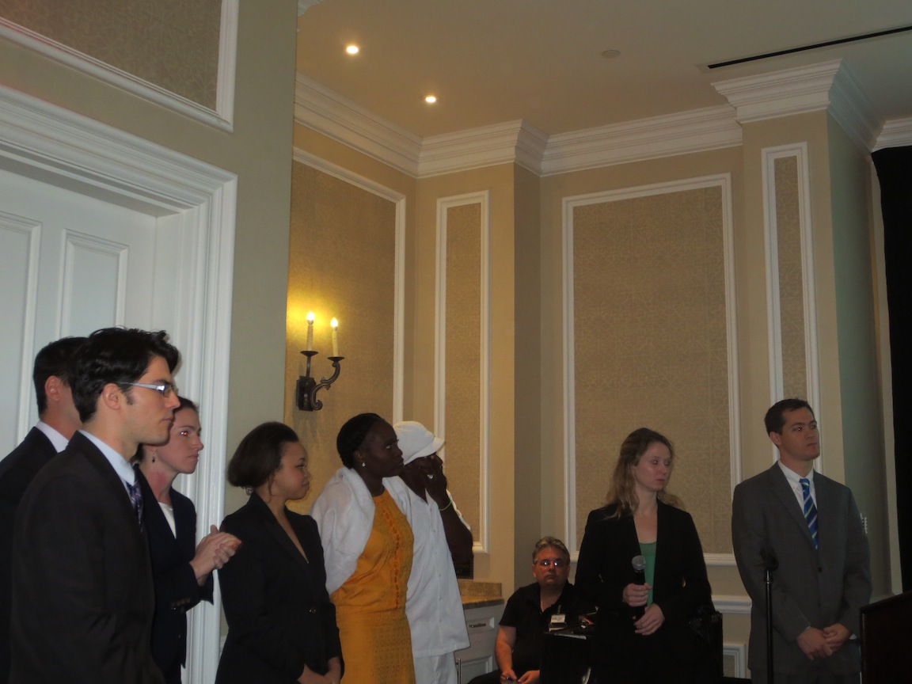
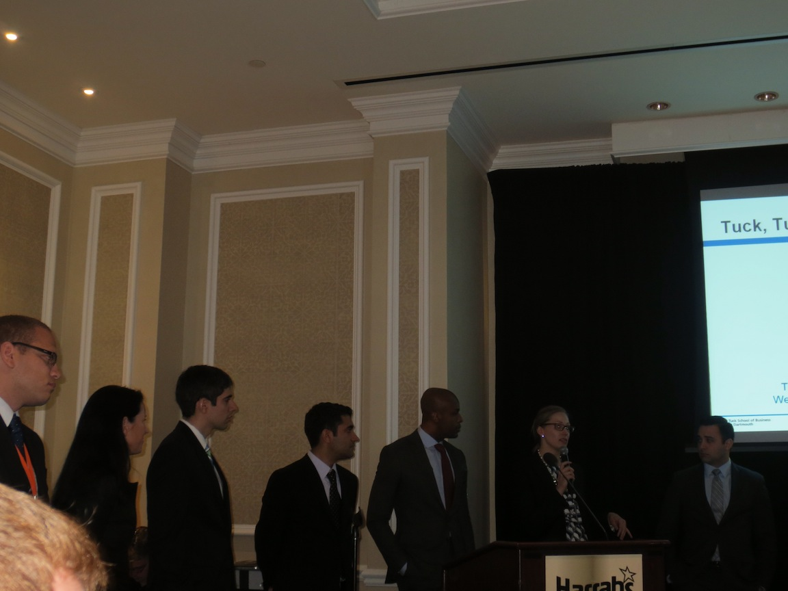
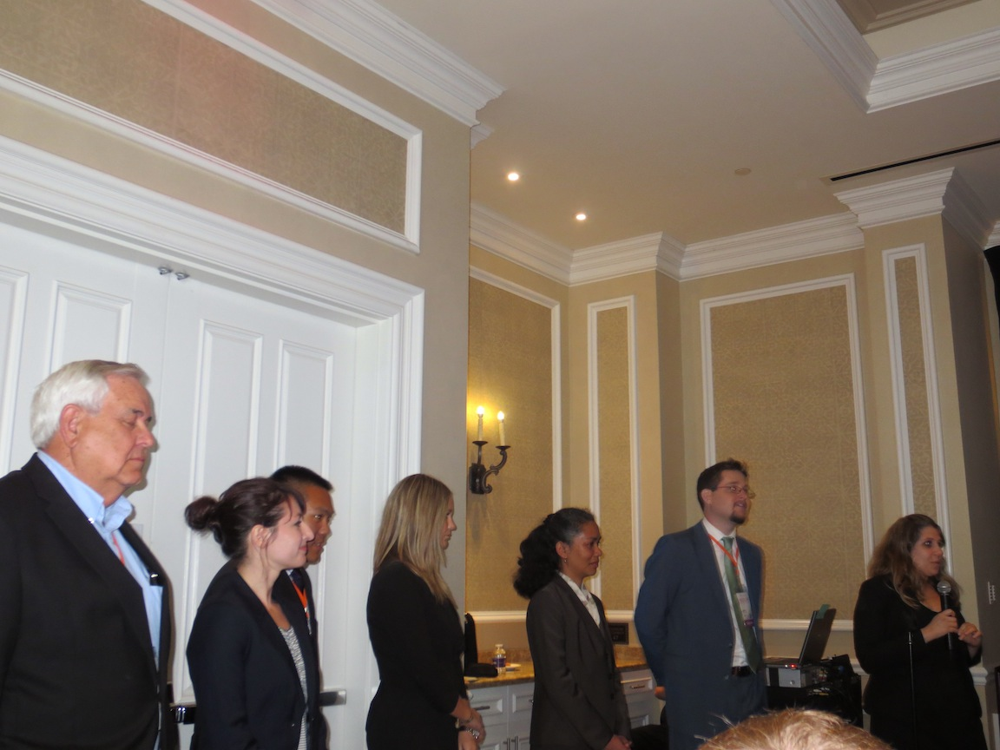
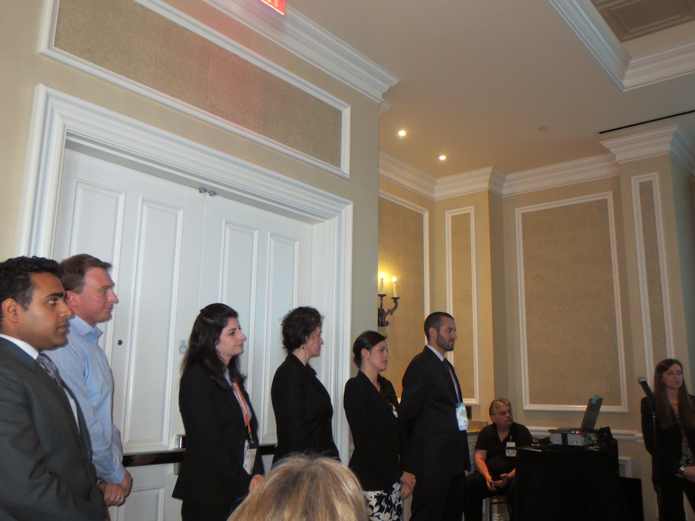

Eight MBA teams worked with local entrepreneurs during New Orleans Entrepreneurship Week. The teams were advised by employees from Google, Salesforce, Silverline, and Excella Consulting on subjects where they had gaps in experience, such as developing software platform roadmaps. Overall though it was the teams' extensive work throughout the week that created value for the entrepreneurs. This morning was a chance for each of the schools to pitch the entrepreneurs' ideas to a panel of judges from venture capital firms.
The schools and the companies they represented, in order they pitched, were:
Sara Thomas and Tim Williamson of IdeaVillage provided an introduction.

eTax Credit Exchange is an anonymous online marketplace for buying and selling tax credits. The tax credit exchanges can occur both within a single state and across multiple states. eTax Credit Exchange hopes to bring liquidity to the tax credit market which is currently underused by organizations that can benefit from the credits.
Tulane University pitching eTax Credit Exchange.
The revenue model is based on taking a percentage of each transaction that takes place on the platform.

The Tulane University team, from left to right: Gustavo Baptista, Kumar Doraijav, Adran Mendez, Heath Gardenhire, David Bode, Erynn Bell, Conor Aucoin.
Gotointerview.com is an online platform with pre-recorded videos of job seeking candidates for prospective employers. The Harvard Business School team posited and tested hypotheses about the pain employers and prospective employees feel. The team then determined how Gotointerview.com could position itself to best solve the problems around hiring hourly employees.
Harvard University pitching Gotointerview.com.
The revenue model is based on charging employers a fee when job candidates are hired. Other revenue streams are being considered as well but would be based on growth of the platform.
The Harvard University team.
Zlien helps construction contractors get paid through mechanics liens through a simplified online platform. Each state has different regulations for mechanics liens so Zlien eliminates the necessity for contractors to involve lawyers in the process.

Columbia University pitching Zlien.
The revenue model for Zlien is based on taking a percentage of each transaction, similar to how payday loans work.
The Columbia University team.
Bissap Breeze is a traditional African drink called Hibiscus that Bissap produces in the United States to sell locally. The company had early success with Whole Foods and Rousses. Unfortunately, Bissap then found itself with unsold inventory from premature scaling, which created monthly losses. The Cornell team helped stablize Bissap's finances and put in place structure for accurate accounting going forward.

Cornell University pitching Bissap Breeze.
The revenue model for Bissap Breeze is a traditional markup over product cost to create a profit.
The Cornell University team.
Clothes Line has a software product for retail trade show product orders. Currently purchases at retail trade shows is done entirely by paper. The current process is error prone. The order amounts written can be incorrect. There can be insufficient product by vendors to fulfill orders. Clothes Line software creates virtual purchase orders that can be processed more efficiently than paper-based purchase orders.

Dartmouth pitching Clothes Line.
The Dartmouth team recommended a rebranding to minimize confusion over the Clothes Line name. The revenue model is based on charging vendors a percentage fee based on each transaction conducted through the software.
The Dartmouth team.
Pierce Industries has a product known as Wave Robber that collects sediment from waves that can be used to rebuild shorelines. Wave Robber works through the energy of the waves and does not require an external power source. Many modular Wave Robbers can be placed and hooked together to cover a large area of shoreline.

Loyola University pitching Pierce Industries' Wave Robber.
The revenue model for the Wave Robber is to sell the product at a profit to private landowners, state governments, and oil and gas companies that are major land owners.
The Loyola University team.
Education Everytime is a musical system designed to help teachers with better engage their students and control their classrooms. The product was used by the founder to improve his own classroom during his stint at Teach for America. Education Everytime is now in use in classrooms in New Orleans to help classroom management and prove the product creates positive results.

Stanford University pitching Education Everytime.
The distribution and sales strategy for Education Everytime is to directly target and sell to teachers. The revenue model is to profit from each sale to teachers for the product. The pricing will be determined based on a beta program later in fall 2013.

The Stanford University team.
Your Nutrition Delivered is a service for healthy home delivery of meals to customers. The founder has a background in nutrition and uses that as a differentiator over competing services that are "pseudo-healthy."
The core customers for the business are busy professionals who do not have time to cook as well as overweight individuals do not have enough knowledge about what is healthy to lose weight. The core business service is provided through home delivery and a catering service, instead of vending machines. The service is positioned as a high-end differentiated service instead of a low cost model.

Yale University pitching Your Nutrition Delivered.
The revenue model is based on selling a subscription to customers.
The Yale University team.
All the business school groups did a great job, especially considering the tight time constraints. The judges will announce the winning team of the IdeaPitch competition tonight. The two winning teams were Stanford Graduate School of Business with Education Everytime and Tuck School of Business at Dartmouth College with The Clothes Line. Congratulations to both teams!
If you want to keep up with my trip, please follow me on Twitter.
comments powered by Disqus Return to the blog